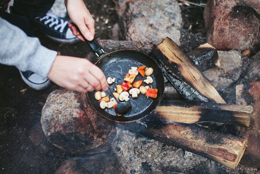

Tips On Cooking And Packing Cookware For The Outdoors
By Matt Warwick
11 February 2023
Hiking

There's a simplicity to the thick forests and endless lakes of Finland - which are a source of great pride to its people.
If you’re looking to spend some time camping in the great outdoors. Here are some outdoors cooking tips on what you should pack when it comes to cooking outdoors. If you want the best camping cookware, you’re not going to just pick the first set you see. It’s all about the best materials and the best capacity to fit your needs. There are a whole lot of different materials that are used to make camping cookware. You can find it in just about as many different materials as you can find home cookware, so we’ll only cover a few superlatives here.
Trending
1 day ago
The Biggest Reason Why Your Home Feels Gloomy This Time of Year and What to Do About It
1 day ago
The Biggest Reason Why Your Home Feels Gloomy This Time of Year and What to Do About It
1 day ago
The Biggest Reason Why Your Home Feels Gloomy This Time of Year and What to Do About It
1 day ago
The Biggest Reason Why Your Home Feels Gloomy This Time of Year and What to Do About It